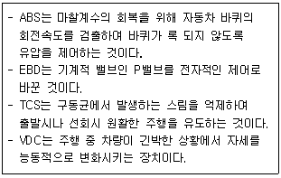
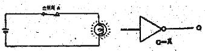

자동차정비산업기사 (2012-08-26 기출문제)
1과목: 일반기계공학
1. 인장시험 전의 지름이 15mm 이고, 시험 후 파단부의 지름이 13mm일 때 단면 수축률은 약 몇 %인가?(오류 신고가 접수된 문제입니다. 반드시 정답과 해설을 확인하시기 바랍니다.)
- 13.33
- 24.89
- 36.66
- 49.78
(정답률: 45%)

2. 중공단면축의 바깥지름이 5㎜, 안지름이 3㎜, 허용전단응력이 300 N/mm2 일 때 허용비틀림 모멘트는 약 몇 Nㆍ㎜ 인가?
- 4291
- 5291
- 6409
- 7291
(정답률: 44%)
3. 외접 원통마찰차의 속도비가 2 이고. 축간거리가 600 ㎜ 라면 두 마찰차의 직경은 각각 몇 ㎜인가?
- 100, 200
- 300, 600
- 400, 800
- 600, 1200
(정답률: 62%)
4. 절삭 공구용 재료가 아닌 것은?
- 소결초경합금
- 인바
- 주조경질합금
- 고속도강
(정답률: 76%)
5. 미끄럼 베어링에서 베어링과 접촉하고 있는 축 부분을 무엇이라고 하는가?
- 핀
- 플랜지
- 조인트
- 저널
(정답률: 73%)
6. 길이 4 m인 외팔보의 자유단에 10 kN 의 집중하중이 작용하고 있다. 보의 허용 굽힘 응력이 2 MPa 일 때, 보의 폭(b)이 25㎝ 인 직사각형 단면의 높이(h)는 약 몇 ㎝ 이상이어야 하는가?
- 30
- 55
- 70
- 100
(정답률: 36%)
7. 테이퍼 구멍을 가진 다이를 통과시켜 재료를 잡아 당겨서, 가공제품이 다이 구멍의 최소단면 형상 치수를 갖게 하는 가공법은?
- 전조가공
- 절단가공
- 인발가공
- 프레스가공
(정답률: 81%)
8. 전양정(H)이 30 m 이고, 급수량(Q)이 1.2 m3/min 인 펌프를 설계할 때, 펌프의 효율(η)을 0.75 로 하면 펌프의 축동력은 약 몇 ㎾인가?
- 10.54
- 8.73
- 7.84
- 5.73
(정답률: 45%)
9. 구름베어링과 비교한 미끄럼베어링의 특성이 아닌 것은?
- 윤활장치가 필요한 경우가 많다.
- 비교적 저속회전에서 사용된다.
- 유체마찰이며, 마찰계수가 크다.
- 호환성이 없다.
(정답률: 53%)
10. 다음 중 너트의 풀림 방지법이 아닌 것은?
- 로크너드 사용
- 분할핀 사용
- 세트스크류 사용
- 리벳 사용
(정답률: 68%)
11. 액체침탄법의 장점 아닌 것은?
- 연성이 좋아진다.
- 온도조절이 용이하다.
- 산화가 방지되므로 가공시간이 절약된다.
- 가열이 균일하고, 제품의 변형을 방지할 수 있다.
(정답률: 58%)
12. 게이지 블록에 관한 설명 중 틀린 것은?
- 사용 후 밀착한 상태 그대로 보관해야 표면이 상하지 않는다.
- 게이지 표면의 방청유를 깨끗한 천으로 충분히 닦아낸 다음 사용한다.
- 사용 후에는 벤젠이나 에테르로 깨끗이 한 후에 방청유를 칠해 보관한다.
- 길이의 제작 시 게이지 블록 개수는 최소로 만드는 것이 좋다.
(정답률: 73%)
13. 같은 재료에서도 하중의 상태에 따라 안전율이 각각 다르게 적용하는데, 다음 중 일반적으로 안전율을 가장 크게 해야 하는 하중은?
- 충격 하중
- 반복 하중
- 교번 하중
- 정 하중
(정답률: 84%)
14. 다음 용접부의 검사 중 비파괴 검사법에 해당하는 것은?
- 인장시험
- 피로시험
- 크리프시험
- 침투탐상시험
(정답률: 82%)
15. 선반작업 시 ø60 ㎜ 의 환봉을 절삭하는데 계산상 회전수는 약 몇 rpm 인가? (단, 절삭속도는 50 m/min 이다.)
- 1065
- 830
- 530
- 265
(정답률: 40%)
16. 제관법의 공정 중 시임 파이프 용접법의 바른 공정은?
- 슬리팅(slitting)-성형(forming)-용접-사이징(sizign)-절단-완성가공
- 성형(forming)-슬리팅(slitting)-용접-사이징(sizign)-절단-완성가공
- 성형forming)-사이징(sizing)-슬리팅(slitting)-용접-절단-완성가공
- 성형forming)-용접-사이징(sizing)-슬리팅(slitting)-절단-완성가공
(정답률: 57%)
17. 기어의 종류를 분류할 때 두 축의 상대위치가 평행이 아닌 것은?
- 스퍼 기어
- 베벨 기어
- 헬리컬 기어
- 더블 헬리컬 기어
(정답률: 70%)
18. 주물의 결함에 속하지 않는 것은?
- 수축공
- 기공
- 압탕
- 편석
(정답률: 77%)
19. 평면 연삭기 숫돌의 원주 속도가 2400 m/min 이고, 연삭저항이 15 N일 때, 연삭기에 공급된 동력이 735 W이면, 이 연삭기의 효율은 약 몇 % 인가?
- 58%
- 75%
- 82%
- 93%
(정답률: 41%)
20. 다음 특수 펌프 중 고속 분류로서 액체 또는 기체를 수송하는 것으로 분류펌프 또는 분사펌프라고도 하는 것은?
- 재생 펌프
- 기포 펌프
- 수격 펌프
- 제트 펌프
(정답률: 77%)
2과목: 자동차엔진
21. 운행차 정기검사에서 배기소음 측정시 정지가동상태에서 원동기 최고출력시의 몇 %의 회전속도로 측정하는가?
- 65%
- 70%
- 75%
- 80%
(정답률: 61%)
22. LPG 엔진에서 액상ㆍ기상 솔레노이드 밸브에 대한 설명으로 틀린 것은?
- 기관의 온도에 따라 액상과 기상을 전환한다.
- 냉간시에 액상연료를 공급하여 시동성을 향상시킨다.
- 기상의 솔레노이드가 작동하면 봄베 상단부에 형성된 기상의 연료가 공급된다.
- 수온 스위치의 신호에 따라 액상ㆍ기상이 전환된다.
(정답률: 56%)
23. 기관오일에 캐비테이션이 발생할 때 나타나는 현상이 아닌 것은?
- 진동, 소음 증가
- 펌프 토출압력의 불규칙한 변화
- 윤활유의 윤활 불안정
- 점도지수 증가
(정답률: 79%)
24. 가솔린 연료의 기화성에 대한 설명으로 틀린 것은?
- 연료 라인이 과열하면 베이퍼 록(Vapor Lock)현상이 발생한다.
- 냉간 상태에서 시동 시에는 기화성이 좋아야 한다.
- 더운 날 기화기내의 연료가 비등할 수 있다.
- 연료펌프가 불량하면 퍼콜레이션(Percolation)현상이 발행한다.
(정답률: 46%)
25. 가솔린 기관의 연료 옥탄가에 대한 설명으로 옳은 것은?
- 옥탄가의 수치가 높은 연료일수록 노크를 일으키기 쉽다.
- 옥탄가 90 이하의 가솔린은 4 에틸납을 혼합한다.
- 노크를 일으키지 않는 기준연료를 이소옥탄으로 하고 그 옥탄가를 0 으로 한다.
- 탄화수소의 종류에 따라 옥탄가가 변화한다.
(정답률: 64%)
26. 융착에 의한 마모현상으로 거리가 먼 것은?
- 스커핑
- 스코링
- 고착
- 스크래칭
(정답률: 65%)
27. LPI 기관에서 연료압력과 연료온도를 측정하는 이유는?
- 최적의 점화시기를 결정하기 위함이다.
- 최대 흡입공기량을 결정하기 위함이다.
- 최대로 노킹 영역을 피하기 위함이다.
- 연료 분사량을 결정하기 위함이다.
(정답률: 57%)
28. 내연기관에서 장행정 기관과 비교할 경우 단행정 기관의 장점으로 틀린 것은?
- 흡ㆍ배기 밸브의 지름을 크게 할 수 있어 흡ㆍ배기 효율을 높일 수 있다.
- 피스톤의 평균속도를 높이지 않고 기관의 회전속도를 빠르게 할 수 있다.
- 직렬형 기관인 경우 기관의 높이를 낮게 할 수 있다.
- 직렬형 기관인 경우 기관의 길이가 짧아진다.
(정답률: 70%)
29. 4행정 사이클 기관에서 블로다운(blow-down) 현상이 일어나는 행정은?
- 배기행정 말 ~ 흡입행정 초
- 흡입행정 말 ~ 압축행정 초
- 폭발행정 말 ~ 배기행정 초
- 압축행정 말 ~ 폭발행정 초
(정답률: 67%)
30. 배출가스 저감 및 정화를 위한 장치에 속하지 않는 것은?
- EGR 밸브
- 캐니스터
- 삼원촉매
- 대기압센서
(정답률: 80%)
31. 전자제어 MAP센서 방식에서 분사밸브의 분사(지속)시간 계산식으로 옳은 것은?
- 기본분사기간 × 보정계수 + 무효분사시간
- 1/2 × 기본분사시간 + 무효분사시간
- (무효분사시간 - 기본분사시간) × 보정계수
- 1/4 × 기본분사기간 × 보정계수
(정답률: 65%)
32. 가솔린기관의 노크에 대한 설명으로 틀린 것은?
- 실린더 벽을 해머로 두들기는 것과 같은 음이 발생한다.
- 기관의 출력을 저하시킨다.
- 화염전파 속도를 늦추면 노크가 줄어든다.
- 억제하는 연료를 사용하면 노크가 줄어든다.
(정답률: 73%)
33. 커먼레일 연료분사장치에서 파일럿 분사가 중단될 수 있는 경우가 아닌 것은?
- 파일럿 분사가 주분사를 너무 앞지르는 경우
- 연료압력이 최소값 이상인 경우
- 주 분사 연료량이 불충분한 경우
- 엔진 가동 중단에 오류가 발생한 경우
(정답률: 64%)
34. 점화순서를 정하는데 있어 고려할 사항으로 틀린 것은?
- 연소가 일정한 간격으로 일어나게 한다.
- 크랭크축에 비틀림 진동이 일어나지 않게 한다.
- 혼합기가 각 실린더에 균일하게 분배되게 한다.
- 인접한 실린더가 연이어 점화되게 한다.
(정답률: 80%)
35. 가솔린엔진의 노크 발생을 억제하기 위하여 엔진을 제작할 때 고려해야 할 사항에 속하지 않는 것은?
- 압축비를 낮춘다.
- 연소실 형상, 점화장치의 최적화에 의하여 화염전파 거리를 단축시킨다.
- 급기 온도와 급기압력을 높게 한다.
- 와류를 이용하여 화염전파속도를 높이고 연소기간을 단축시킨다.
(정답률: 59%)
36. 4행정 디젤기관에서 각 실린더의 분사량을 측정하였더니 최대 분사량은 80 cc, 최소 분사량은 60 cc 일 때 평균 분사량이 70cc 이면 분사량의 (+)불균율은?
- 약 9 %
- 약 14 %
- 약 18 %
- 약 20 %
(정답률: 63%)
37. 전자제어 가솔린기관에서 사용되는 센서 중 흡기온도 센서에 대한 내용으로 틀린 것은?
- 온도에 따라 저항값이 보통 1 kΩ ~ 15 kΩ 정도 변화되는 NTC형 서미스터를 주로 사용한다.
- 엔진 시동과 직접 관련되면 흡입공기량과 함께 기본 분사량을 결정하게 해주는 센서이다.
- 온도에 따라 달라지는 흡입 공기밀도 차이를 보정하여 최적의 공연비가 되도록 한다.
- 흡기온도가 낮을수록 공연비는 증가된다.
(정답률: 49%)
38. 가솔린기관에서 블로바이 가스의 발생 원인으로 맞는 것은?
- 엔진 부조에 의해 발생된다.
- 실린더 헤드 가스켓의 조립불량에 의해 발생된다.
- 흡기밸브의 밸브 시트면의 접촉 불량에 의해 발생된다.
- 엔진의 실린더와 피스톤 링의 마멸에 의해 발생된다.
(정답률: 69%)
39. 디젤기관의 연료공급 장치에서 연료공급 펌프로부터 연료가 공급되나 분사펌프로부터 연료가 송출되지 않거나 불량한 원인으로 틀린 것은?
- 연료여과기의 여과망 막힘
- 플런저 플런저배럴의 간극과다
- 조속기 스프링의 장력약화
- 연료여과기 및 분사펌프에 공기흡입
(정답률: 58%)
40. 전자제어 가솔린기관에서 급가속시 연료를 분사할 때 어떻게 하는가?
- 동기분사
- 순차분사
- 비동기분사
- 간헐분사
(정답률: 66%)
3과목: 자동차섀시
41. 구동력을 크게 하기 위해서는 축의 회전토크 T와 구동바퀴의 반경 R을 어떻게 해야 하는가?
- T와 R 모두 크게 한다.
- T는 크게, R은 작게 한다.
- T는 작게, R은 크게 한다.
- T와 R 모두 작게 한다.
(정답률: 73%)
42. 배력식 브레이크 장치의 설명으로 옳은 것은?
- 흡기 다기관의 진공과 대기압의 차는 대략 0.1kg/cm2 이다.
- 진공식은 배기 다기관의 진공과 대기압의 압력차를 이용한다.
- 공기식은 공기 압축기의 압력과 대기압의 압력차를 이용한 것이다.
- 하이드로 백은 배력장치가 브레이크 페달과 마스터 실린더 사이에 설치되어진 형식이다.
(정답률: 46%)
43. 전자제어 동력조향장치에 대한 설명으로 틀린 것은?
- 고속 주행시 스티어링 휠의 조작을 가볍게 한다.
- 회전수 감응식은 기관 회전수에 따라서 조향력을 변화시킨다.
- 차속 감응식은 차속에 따라서 조향력을 변화시킨다.
- 동력 스티어링의 조향력은 파워 실린더에 걸리는 압력에 의해 결정된다.
(정답률: 77%)
44. 마스터 실린더의 단면적이 10 cm2 인 자동차의 브레이크에 20 N의 힘으로 브레이크 페달을 밟았다. 휠 실린더의 단면적이 20 cm2 라고 하면 이 때의 휠 실린더에 작용되는 힘은?
- 20 N
- 30 N
- 40 N
- 50 N
(정답률: 67%)
45. 주행 중 타이어에서 나타나는 하이드로 플레이닝 현상을 방지하기 위한 방법으로 틀린 것은?
- 승용차의 타이어는 가능한 리브 패턴을 사용할 것
- 트래드 패턴은 카프모양으로 세이빙 가공한 것을 사용 할 것
- 타이어 공기압을 규정보다 낮추고 주행속도를 높일 것
- 트래드 패턴의 마모가 규정 이상 마모된 타이어는 고속주행 시 교환할 것
(정답률: 77%)
46. 고속도로에서 216 km를 주행하는데 2시간 15분이 소요되었다. 이 때 평균 주행속도는 몇 m/s 인가?
- 약 96
- 약 26.7
- 약 100.5
- 약 7.74
(정답률: 59%)
47. 다음 보기에서 맞는 내용은 모두 몇 개인가?

- 1개
- 2개
- 3개
- 4개
(정답률: 62%)
48. ABS(Anti-lock Brake System)가 설치된 차량에서 휠 스피드 센서의 설명으로 맞는 것은?
- 리드 스위치 방식의 차속센서와 같은 원리이다.
- 휠 스피드 센서는 앞바퀴에만 설치된다.
- 휠 스피드 센서는 뒷바퀴에만 설치된다.
- 차륜의 속도를 감지하여 컨트롤 유니트로 입력하는 역할을 한다.
(정답률: 78%)
49. 추진축에서 공명진동이 발생하는 회전속도를 무엇이라 하는가?
- 최고 회전속도
- 최대응력 회전속도
- 고유진동 회전속도
- 위험 회전속도
(정답률: 53%)
50. 디스크 브레이크에 관한 설명으로 틀린 것은?
- 브레이크 페이드 현상이 드럼 브레이크보다 현저하게 높다.
- 회전하는 디스크에 캐드를 압착시키게 되어 있다.
- 대개의 경우 자기 작동 기구로 되어 있지 않다.
- 캘리퍼거 설치된다.
(정답률: 72%)
51. 다음 중 전자제어 현가장치를 작동시키는데 관련된 센서가 아닌 것은?
- 파워오일 압력 센서
- 차속 센서
- 차고 센서
- 조향 각 센서
(정답률: 68%)
52. 승용차 타이어는 트레이드 홈 깊이가 몇 ㎜이하이면 교환해야 안전한가?
- 2.0㎜ 이하
- 1.6㎜ 이하
- 2.4㎜ 이하
- 3.2㎜ 이하
(정답률: 67%)
53. 전자제어 자동변속기의 댐퍼 클러치 작동에 대한 설명 중 맞는 것은?
- 작동은 압력 조절 솔레노이드의 듀티율로 결정된다.
- 급가속시는 토크 확보를 위하여 댐퍼 클러치 작동을 유지한다.
- 페일 세이프 상태에서도 댐퍼 클러치는 작동한다.
- 스로틀 포지션 센서 개도와 차속의 상황에 따라 작동 비작동이 반복된다.
(정답률: 62%)
54. 변속기에서 싱크로메시 기구가 작동하는 시기는?
- 변속기어가 물릴 때
- 변속기어가 풀릴 때
- 클러치 페달을 놓을 때
- 클러치 페달을 밟을 때
(정답률: 80%)
55. 전동식 동력조향장치의 설명으로 틀린 것은?
- 유압식 동력조향장치에 필요한 유압유를 사용하지 않아 친환경적이다.
- 유압 발생장치나 파이프 등의 부품이 없어 경량화를 할 수 있다.
- 파워스티어링 펌프의 유압을 동력원으로 사용한다.
- 전동기를 원전 조건에 맞추어 제어함으로써 정확한 조향력 제어가 가능하다.
(정답률: 69%)
56. 무단변속기 차량의 CVT ECU에 입력되는 신호가 아닌 것은?
- 스로틀포지션 센서
- 브레이크 스위치
- 라인 입력 센서
- 킥다운 서보 스위치
(정답률: 57%)
57. 전자제어 현가장치에서 자동차가 선회할 때 원심력에 위한 차체의 흔들림을 최소로 제어하는 기능은?
- 앤티 롤링
- 앤티 다이브
- 앤티 스쿼트
- 앤티 드라이브
(정답률: 69%)
58. FR 방식의 자동차가 주행 중 디퍼렌셜장치에서 많은 열이 발생한다면 고장원인으로 거리가 먼 것은?
- 추진축의 밸런스 웨이트 이탈
- 기어의 백래시 과소
- 프리로드 과소
- 오일 량 부족
(정답률: 64%)
59. 수동변속기 차량에서 클러치가 슬립되는 원인이 아닌 것은?
- 클러치페달 유격이 많다.
- 클러치 페이싱면에 기름으로 오염되었다.
- 클러치 페달 유격이 너무 작다.
- 다이어프램 스프링장력이 약화되었다.
(정답률: 59%)
60. 자동차의 앞바퀴 윤거가 1500mm, 축간거리가 3500mm, 킹핀과 바퀴접지면의 중심거리가 100mm인 자동차가 우회전할 때, 왼쪽 앞바퀴의 조향각도가 32 ̊ 이고 오른쪽 앞바퀴의 조향각도가 40 ̊ 라면 이 자동차의 선회 시 최소 회전반지름은?
- 6.7 m
- 7.2 m
- 7.8 m
- 8.2 m
(정답률: 49%)
4과목: 자동차전기
61. 계기판의 방향지시등 램프 확인결과 좌우 점멸 횟수가 다른 원인이 아닌 것은?
- 플래셔 유닛의 접지가 단선되었다.
- 전구의 용량이 서로 다르다.
- 전구 하나가 단선되었다.
- 플래셔 유닛과 한쪽 방양지시등 사이에 회로가 단선되었다.
(정답률: 63%)
62. 윈드 실드 와이퍼가 작동하지 않을 때 고장원인이 아닌 것은?
- 와이퍼 블레이드 노화
- 전동기 전기자 코일의 단선 또는 단락
- 퓨즈 단선
- 전동기 브러시 마모
(정답률: 80%)
63. 통합 운전석 기억장치는 운전석 시트, 아웃사이드 미러, 조향 휠, 룸미러 등의 위치로 재생하는 편의 장치다. 재생 금지 조건이 아닌 것은?
- 점화스위치가 OFF되어 있을 때
- 변속레버가 위치 “P”에 있을 때
- 차속이 일정속도(예, 3km/h 이상) 이상일 때
- 시트 관련 수동 스위치의 조작이 있을 때
(정답률: 71%)
64. 비중 1.260(20 ̊c)의 묽은 황산 1ℓ 속에 40%(중량)의 황산이 포함되어 있으면 물은 몇 g 포함되어 있는가?
- 650 g
- 712 g
- 756 g
- 819 g
(정답률: 56%)
65. 누설전류를 측정하기 위해 12 V 배터리를 떼어내고 절연체의 저항을 측정하였더니 1 MΩ 이었다. 누설전류는?
- 0.006 mA
- 0.008 mA
- 0.010 mA
- 0.012 mA
(정답률: 72%)
66. 그림의 회로와 논리기호를 나타내는 것은?

- AND(논리곱) 회로
- OR(논리합) 회로
- NOT(논리부정) 회로
- NAND(논리곱부정) 회로
(정답률: 58%)
67. 자동공조장치와 관련된 구성품이 아닌 것은?
- 컴프레서, 습도센서
- 컨덴서, 일사량 센서
- 에바포레이터, 실내온도 센서
- 차고센서, 냉각수온센서
(정답률: 78%)
68. 무배전기 점화장치(DLI)에서 동시점화 방식에 대한 설명으로 틀린 것은?
- 압축과정 실린더와 배기과정 실린더가 동시에 점화된다.
- 배기되는 실린더에 점화되는 불꽃은 압축하는 실린더의 불꽃에 비해 약하다.
- 두 실린더에 병렬로 연결되어 동시 점화되므로 불꽃에 차이가 나면 고장 난 것이다.
- 점화코일이 2개이므로 파워 트랜지스터도 2개로 구성되어 있다.
(정답률: 52%)
69. 다음 중 축전지의 과충전 현상이 발생되는 주된 원인은?
- 전압조정기의 작동 불량
- 발전기 벨트 장력 불량 및 소손
- 배터리 단자의 부식 및 조임 불량
- 발전기 커넥터의 단선 및 접촉 불량
(정답률: 69%)
70. 자동온도 조절장치(FATC)의 센서 중에서 포토다이오드를 이용하여 변환 전류로 컨트롤하는 센서는?
- 일사량 센서
- 내기온도 센서
- 외기온도 센서
- 수온 센서
(정답률: 77%)
71. 기동전동기의 오버런닝 클러치에 대한 설명으로 틀린 것은?
- 엔진이 시동된 후, 엔진의 회전으로 인해 기동 전동기가 파손되는 것을 방지하는 장치이다
- 시동 후 피니언 기어와 기동전동기 계자코일이 차단되어 기동전동기를 보호한다.
- 한 쪽 방향으로만 동력을 전달하여 일방향 클러치라고도 한다.
- 오버런닝 클러치, 스프래그식, 다판클러치식이 있다.
(정답률: 63%)
72. 종합경보장치(Total Warning System)의 제어에 필요한 입력요소가 아니 것은?(오류 신고가 접수된 문제입니다. 반드시 정답과 해설을 확인하시기 바랍니다.)
- 열선스위치
- 도어 스위치
- 시트벨트 경고등
- 차속센서
(정답률: 43%)
73. 충전장치에서 점화스위치를 ON(IG1)했을 때 발전기 내부에서 자석이 되는 것은?
- 로터
- 스테이터
- 정류기
- 전기자
(정답률: 62%)
74. 다음 중 전기 저항이 제일 큰 것은?
- 2 MΩ
- 1.5 Ω× 106 Ω
- 1000 kΩ
- 500000 Ω
(정답률: 66%)
75. 4등식 전조등 중 주행빔과 변환빔이 동시에 점등되는 형식인 경우 1등에 대하여 몇 cd이어야 하는가?
- 13000 이상 75000 cd 미만
- 14000 이상 75000 cd 미만
- 15000 이상 112500 cd 이하
- 12000 이상 112500 cd 이하
(정답률: 73%)
76. 자동차로 인한 소음과 암소음의 측정치의 차이가 5 dB인 경우 보정치로 알맞은 값은?
- 1 dB
- 2 dB
- 3 dB
- 4 dB
(정답률: 68%)
77. 축전지의 정전류 충전에 대한 설명으로 틀린 것은?
- 표준 충전전류는 축전지용량의 10%이다.
- 최소 충전전류는 축전지요량의 5%이다.
- 최대 충전전류는 축전지용량의 20%이다.
- 이론 충전전류는 축전지용량의 50%이다.
(정답률: 61%)
78. 유해가스 감지센서(AQS)가 차단하는 가스가 아닌 것은?
- SO2
- NO2
- CO2
- CO
(정답률: 59%)
79. 에어백(air bag) 작업 시 주의사항으로 잘못된 것은?
- 스티어링 휠 장착 시 클럭스프링의 중립을 확인할 것
- 에어백 관련 정비 시 배터리(-)단자를 떼어 놓을 것
- 보디 도장 시 열처리를 요할 때 인플레이터를 탈거할 것
- 인플레이터의 저항은 아날로그 테스터기로 측정할 것
(정답률: 75%)
80. 점화장치에서 점화 1차코일의 끝부분(-)단자에 시험기를 접속하여 측정할 수 없는 것은?
- 노킹의 유무
- 드웰 시간
- 엔진의 회전속도
- TR의 베이스 단자 전원공급 시간
(정답률: 57%)